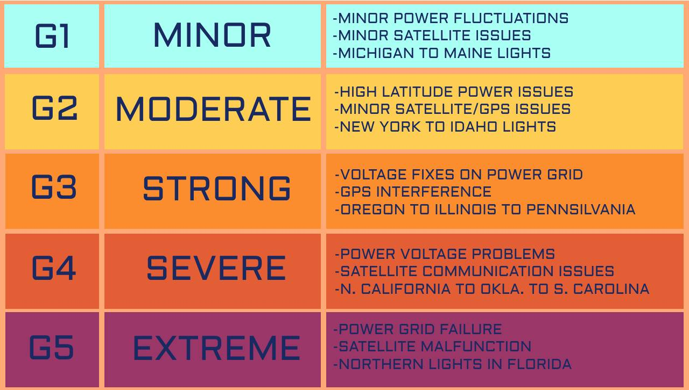

The Project:
What’s the challenge?
To use the “raw” data from DSCOVR-faults and all- to predict geomagnetic storms on Earth.
From past to future
Take the stored data from the DSCOVR and compare them with the daily retrieved data.
To predict future solar storms based on the comparison of the most characteristic
variables that determine a solar wind.
To make it more accessible we would like to represent this data in different graphics.
But, what is the DSCOVR?
The DSCOVR (Deep Space Climate Observatory)
satellite was developed to transmit data concerning
the solar wind and its interaction with the Earth's magnetosphere.
Such data is crucial for predicting geomagnetic storms on our planet.
Launched in 2015 DSCOVR was designed for a 5-year lifespan,
a milestone it has already exceeded, which explains the added margin of error
(faults and all) that must be taken into account.
go back ↑
The problem
Geomagnetic storms, spawned by solar activity,
can wreak havoc on our electrical systems, satellites,
and even our health. Early and accurate prediction is not just a desire;
it's a necessity in our technologically-driven age.
go back ↑
The variables
Geomagnetic storms on Earth are mainly caused by the solar wind and the orientation
of the interplanetary magnetic field (IMF), which is an extension of the Sun's magnetic field.
The aforementioned variables, measured by sensors such as those at DSCOVR,
are crucial to predict and monitor these storms.
Let's see how each of these variables influences the probability of a
geomagnetic storm:
1.Solar wind speed:
A high solar wind speed can compress the magnetosphere and contribute to the onset
of a geomagnetic storm. Speeds above 500 km/s are already considered high,
and values above 800 km/s are especially likely to cause significant geomagnetic storms.
2. Solar wind density:
High density can increase the pressure of the solar wind in the magnetosphere.
Values greater than 10 particles per cm³ are considered high,
but it is the combination of high density with other variables
(such as speed and Bz) that can lead to storms.
3. Temperature:
Although the temperature of the solar wind can influence the properties
of the magnetopause and how the solar wind interacts with the magnetosphere,
it is not generally used as a primary indicator of geomagnetic storms.
4. PhiGSM:
This is the azimuthal orientation of the interplanetary magnetic field
in the YZ plane (with respect to the Sun-Earth direction).
Although it is a useful variable to understand the general orientation of the IMF,
for geomagnetic storms, the Bz component is more critical.
5. Bz GSM: It is the north-south component of
the interplanetary magnetic field. The orientation of Bz is essential:
- A positive Bz (northward) is generally geomagnetically quiet.
- A negative Bz (facing south) means that the interplanetary magnetic
field is opposite the Earth's magnetic field, which facilitates the
connection and transfer of energy. A sustained negative Bz,
especially values below -10 nT or less, can trigger geomagnetic storms.
How to weight the data.
1. Bz GSM:
The south (negative) orientation of Bz GSM is critical because
when it is directed south, it can couple with the Earth's magnetic
field and open the magnetosphere, allowing charged particles to enter.
This can trigger geomagnetic storms. Its direct nature and effect on the
magnetosphere puts it at the top of the list.
2. Speed:
A high speed can intensify the effect of the Bz GSM directed towards the south.
3. Density:
They can enhance geomagnetic storms if they coincide with a negative GSM Bz.
4. Temperature:
It can provide information about the nature of solar emissions and how
they might interact with the magnetosphere.
5. phiGSM:
It is important to understand the full orientation of the IMF,
it does not have the same direct impact on the generation of
geomagnetic storms as the Bz GSM.
go back ↑
Other resources
Our initiative leverages recent data from sensors aboard the
DSCOVR satellite to accurately predict geomagnetic storms on Earth.
But it's not just about the data; it's about how we interpret it.

go back ↑